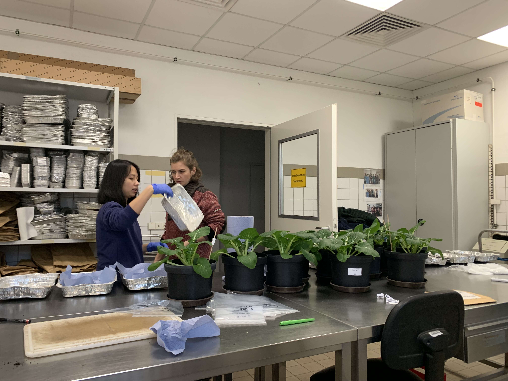
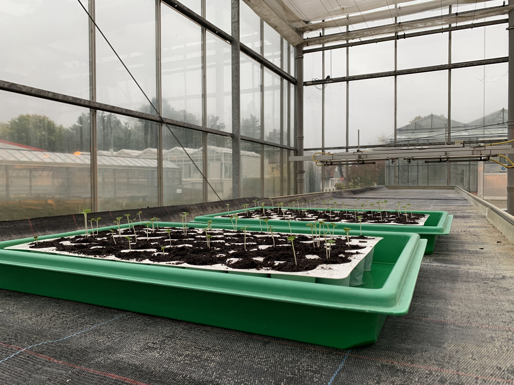
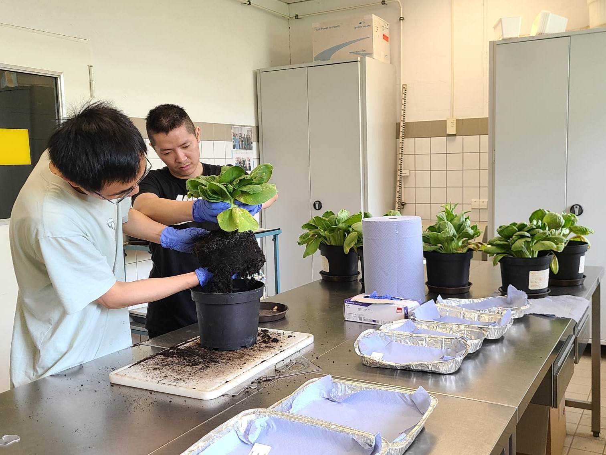
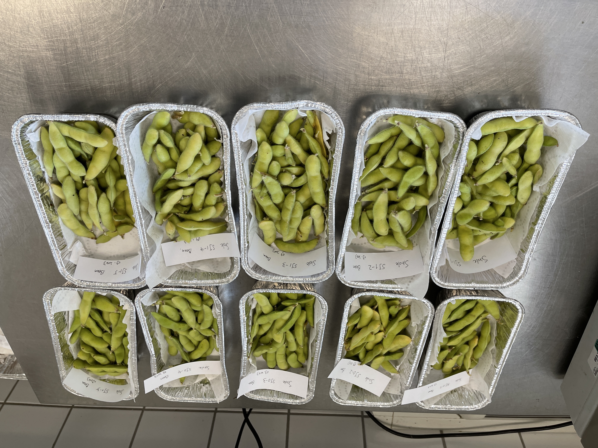
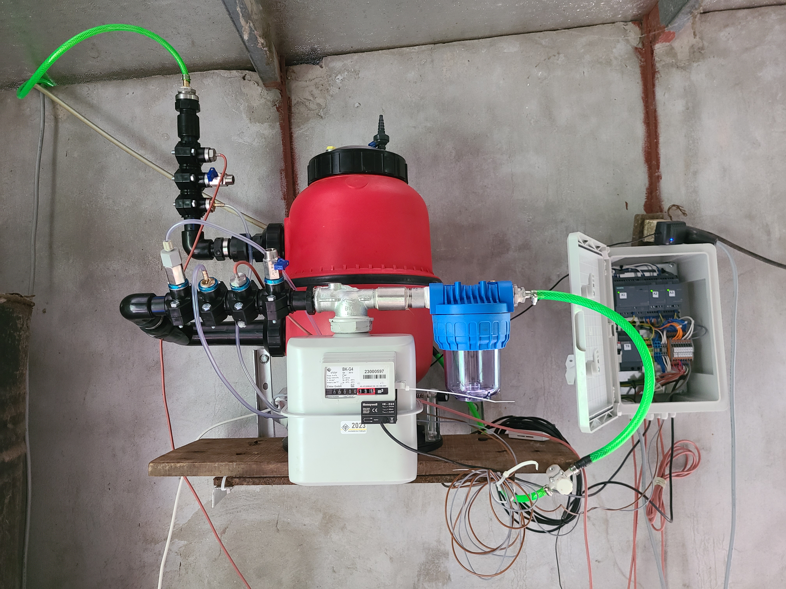
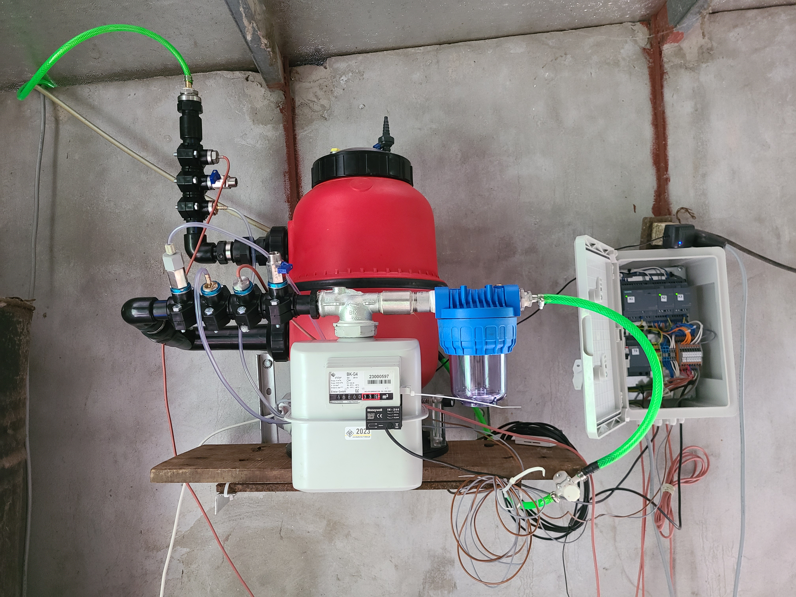
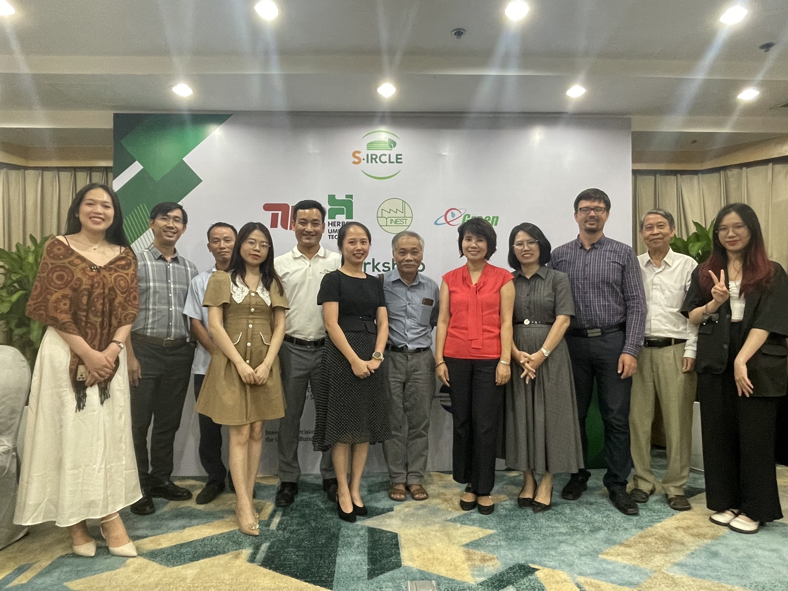
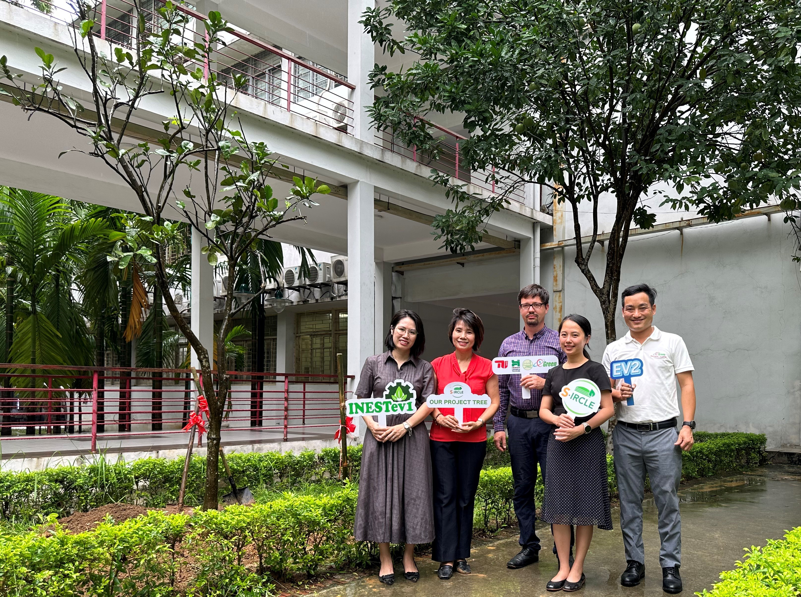
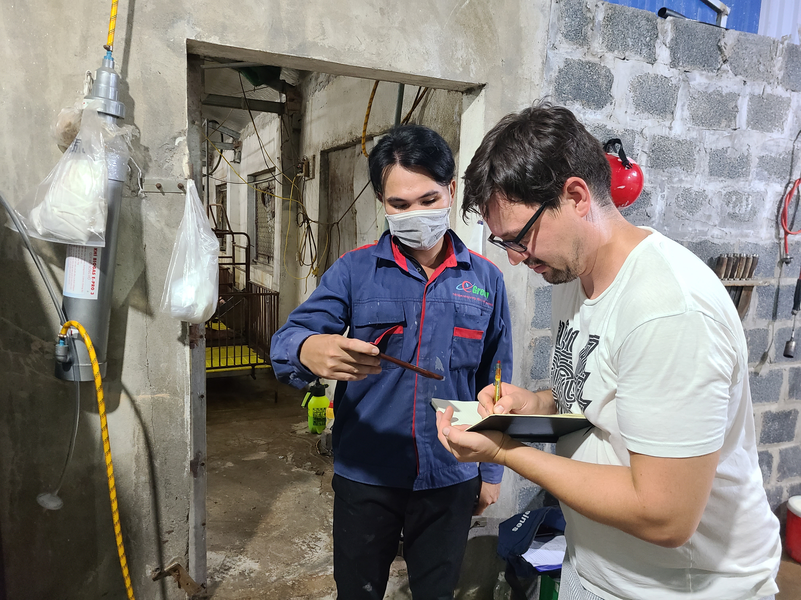
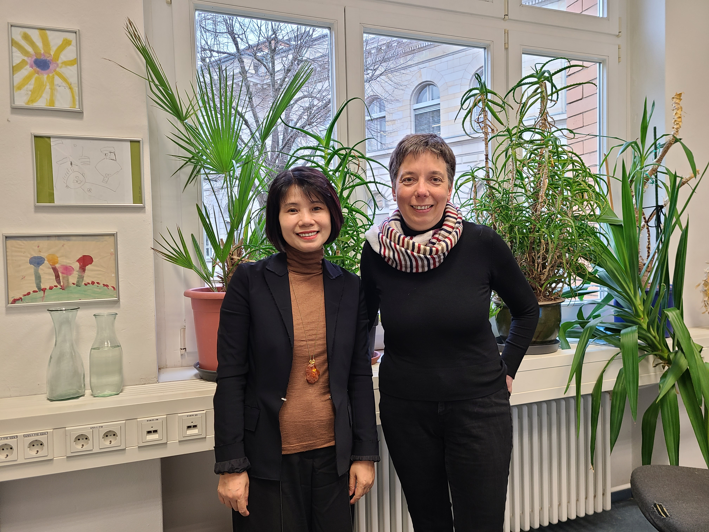

Chào mừng bạn đến với dự án S-IRCLE
Đôi nét về dự án S-IRLCE
Dự án S-IRCLE tập trung xử lý vấn đề làm sạch khí trong các công trình khí sinh học quy mô nhỏ.
Mục tiêu chính của dự án là phát triển một bô lọc thông minh, tự động, có thể tái sinh, nhằm loại bỏ hiệu quả hydro sunfua (H2S) trong khí sinh học.
Sự tồn tại của H2S trong khí sinh học gây ra các rủi ro về sức khỏe của người sử dụng khí sinh học và dẫn đến ăn mòn, làm giảm tuổi thọ của các thiết bị sử dụng khí sinh học.
Dự án S-IRLCE cũng nghiên cứu tái chế lưu huỳnh hấp phụ trên bề mặt vật liệu lọc thành phân bón lưu huỳnh, giúp tuần hoàn lưu huỳnh bền vững.
Nhìn chung, dự án S-IRCLE tập trung phát triển và ứng dụng công nghệ mới và đánh giá môi trường, nhằm đóng góp vào sự tiến bộ của công nghệ khí sinh học tại Việt Nam và
giúp cho việc sử dụng khí sinh học an toàn, bền vững và hiệu quả hơn.
TIN TỨC DỰ ÁN
Thu hoạch cải chíp của thí nghiệm thứ hai
22/12/2023Vào một ngày mùa đông, ngày 19 tháng 12, cải chíp đã trưởng thành, sẵn sàng để thu hoạch sau 60 ngày. Tiến trình của buổi thu hoạch lần này tương tự như trong thí nghiệm đầu tiên: sau công đoạn chuẩn bị tỉ mỉ, mẫu rễ, mầm và đất được thu thập và sấy khô. Công đoạn phân tích diễn ra sau kỳ nghỉ Giáng sinh: mẫu được nghiền thành dạng bột để đo hàm lượng nguyên tố bằng xét nghiệm ICP, sau đó được chiết xuất để đo nồng độ của các hợp chất tan. 
Bắt đầu thí nghiệm thứ hai
31/10/2023Viện Rau và Cây Cảnh Leibniz (IGZ) tiếp tục hỗ trợ địa điểm cho thí nghiệm thứ hai của dự án. Lần này, thí nghiệm được tiến hành nhằm mục đích nghiên cứu sự phát triển của cây trong các hỗn hợp đất khác nhau: FerroSorp trộn phân vô cơ, compost hoặc bã từ bể khí sinh học. Vào ngày 20 tháng 10, 25 chậu cải chíp đã nảy mầm và được chuyển đến nhà kính có trang bị đèn sưởi. Chúng tôi bố trí tưới nước cho cây hai lần mỗi tuần, và cũng ghi lại chiều cao, khối lượng và số lượng lá để phục vụ cho việc phân tích sau này. 
Kết thúc thí nghiệm đầu tiên
23/08/2023Ngày 22 tháng 8, tại Viện Rau và Cây cảnh Leibniz (IGZ), dự án đã thu hoạch thành công 30 cây cải chíp và 10 cây đậu tương. Mầm và rễ của cây được rửa sạch, chia ra làm hai loại mẫu và cân trọng lượng; mỗi chậu cũng được xét lấy mẫu đất riêng. Những mẫu này được mang đi sấy khô để chuẩn bị cho giai đoạn phân tích. Trong phòng thí nghiệm, chúng tôi tiến hành đo thông số cũng như các tính chất khác nhau của cây qua nhiều phương pháp phân tích, từ đó đưa ra những kết luận về sự phát triển của cây khi sử dụng hạt FerroSorp với các kích cỡ khác nhau làm phân bón.
 Hoàn thiện việc lắp đặt bộ lọc biogas thử nghiệm
07/08/2023Các kỹ nư từ HUT và EG đã lắp đặt thành công bộ lọc biogas mới tại 3 công trình khí sinh học quy mô hộ gia đình ở tỉnh Nam Định. Các hệ thông này ngoài bộ lọc còn có bộ ghi dữ liệu, bơm khí để bơm không khí vào giúp hoàn nguyên hạt lọc trong quá trình sử dụng, đầu đo áp suất, nhiệt độ khí và đồng hồ đo lưu lượng khí đi qua bộ lọc. Các bộ lọc này sẽ được thử nghiệm trong vòng một năm, do kỹ sư của EG tại địa phương giám sát.
 

Hội thảo dự án S-IRCLE tại Hà Nội
04/08/2023"Công nghệ khí sinh học tuần hoàn - Bộ lọc thông minh giúp loại bỏ H2S và thu hồi lưu huỳnh" đã diễn ra thành công. Trong hội thảo, bà Hoàng Trang đã giới thiệu tổng quát về dự án S-IRCLE và kỹ sư Marcel Spahr (HUT) đã trình bày về bộ lọc thông minh có khả năng hoàn nguyên liên tục. Dự án S-IRCLE nhận được sự quan tâm của các bên tham gia, những câu hỏi và góp ý để ứng dụng công nghệ mới đối với điều kiện ở Việt Nam. Tham gia hội thảo có Hiệp hội Khí sinh học Việt Nam, nhóm dự án SNV BioLive, các công ty khí sinh học và nông trại.
Cây dự án S-IRCLE được trồng tại trường Đại học Bách Khoa Hà Nội
04/08/2023Sự kiện trồng cây được tổ chức trong khuôn viên trường Đại học Bách Khoa Hà Nội, với sự tham gia của các đối tác dự án S-IRCLE. Cây bưởi diễn được lựa chọn vì đây là cây ăn trái lâu năm và và loại cây địa phương tại Việt Nam. Cây bưởi sẽ phát triển cùng dự án S-IRCLE và góp phần vào việc chông biến đổi khí hậu.
Khảo sát các công trình khí sinh học tại tỉnh Nam Định
03/08/2023Kỹ sư Marcel Spahr (HUT) đã đến Việt Nam và với sự hỗ trợ của kỹ thuật viên - anh Thuận (EG) đã đến khảo sát 3 công trình khí sinh học quy mô hộ gia đình ở tỉnh Nam Định. Mục đích của cuộc khảo sát là để tiến hành lắp đặt thử nghiệm bộ lọc khí sinh học mới, nhằm loại bỏ H2S trong khí sinh học, giúp người sử dụng khi sinh học an toàn và kéo dài tuổi thọ thiết bị sử dụng khí sinh học.
Thư mời và đăng ký tham dự hội thảo
01/07/2023Trong khuôn khổ dự án S-IRCLE, hội thảo "Công nghệ khí sinh học tuần hoàn - Hệ thống bộ lọc thông minh loại bỏ H2S và thu hồi lưu huỳnh" sẽ được tổ chức tại khách sạn Sunway, Hà Nội vào ngày 04/08/2023. Với sự tham gia của các chuyên gia và công ty khí sinh học tại Việt Nam và Đức. Mục đích của hội thảo nhằm giới thiệu dự án S-IRCLE, bộ lọc khí mới được phát triển bởi công ty Herbst Umwelt Technik GmbH dành cho các công trình khí sinh học quy mô nhỏ, và nhằm thảo luận một cách toàn diện về các ưu nhược điểm của công nghệ mới, cũng như các tiềm năng và phương thức để công nghệ có thể được áp dụng rộng rãi trên cả nước. Thư mời, kế hoạch hội thảo và biểu mẫu đăng ký, vui lòng xem các mẫu dưới đây:
Thông tin về chương trình hội thảo: xem tại đây
Bản đăng ký tham dự hội thảo: xem tại đây
Thí nghiệm sử dụng vật liệu lọc biogas trên cây trồng
16/06/2023Trường Đại học kỹ thuật Berlin đã tiến hành nghiên cứu mối quan hệ giữa kích thước hạt của FerroSorp, vật liệu hấp thụ được dùng trong bộ lọc biogas nhằm loại bỏ H2S và sự giải phóng lưu huỳnh trong đất. Nghiên cứu nhằm đánh giá khả năng sử dụng FerroSorp như một dạng phân bón bổ sung lưu huỳnh cho cây trồng. Thí nghiệm được tiến hành trên cây cải (Pak Choi), trong điều kiện nhà kính mở, tại viện IGZ ở Großbeeren. Thời gian thử nghiệm sẽ từ 9 đến 10 tuần sau khi gieo hạt.
Giáo sư Nguyễn Thị Ánh Tuyết tới thăm trường TU Berlin
17/04/2023Giáo sư Nguyễn Thị Ánh Tuyết, trưởng viện INEST, trường Đại học Bách Khoa Hà Nội đã có buổi thăm và làm việc tại trường Đại học Kỹ Thuật Berlin. Giáo sư Nguyễn Thị Ánh Tuyết và giáo sư Vera Susanne Rotter, trưởng bộ môn Kinh tế tuần hoàn và công nghệ tái chế ở trường Berlin đã có buổi gặp và trao đổi ý tưởng và ký kết hợp tác giữa hai đơn vị. Buổi ký kết đặt nền tảng cho sự hợp tác hiệu quả và lâu dài giữa 2 giáo sư và hai trường đại học.
Khởi động dự án S-IRLCE
06/04/2023Buổi họp khởi động dự án UKAVita diễn ra trực tuyên, được tổ chức bởi bộ môn Kinh tế tuần hoàn và Công nghệ Tái chế, trường Đại học Kỹ Thuật Berlin cùng với sự tham gia của các đối tác dự án bao gồm: công ty Kỹ thuật môi trường Herbst, công ty Egreen và viện INEST, trường Đại học Bách Khoa Hà Nội. Trong buổi khởi động, các bên có dịp để giới thiệu về lĩnh vực hoạt động của mình và cùng nhau trao đổi thảo luận cách thực hiện các gói công việc của dự án.